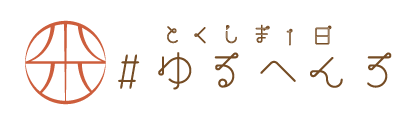

<!DOCTYPE html>
<html lang="ja">
    <head>
        <meta charset="UTF-8" />
        <meta http-equiv="X-UA-Compatible" content="IE=edge" />
        <meta name="viewport" content="width=device-width, initial-scale=1.0" />
        <!-- css -->
        <link rel="stylesheet" href="../assets/css/reset.css" />
        <link rel="stylesheet" href="../assets/css/common.css" />
        <link rel="stylesheet" href="../assets/css/footer.css" />
        <!-- Googlefont -->
        <link rel="preconnect" href="https://fonts.googleapis.com" />
        <link rel="preconnect" href="https://fonts.gstatic.com" crossorigin />
        <link
            href="https://fonts.googleapis.com/css2?family=Noto+Sans:wght@400;500;900&family=Zen+Maru+Gothic:wght@400;500;700&display=swap"
            rel="stylesheet"
        />
        <!-- jquery -->
        <script src="../assets/js/jquery-3.6.3.min.js"></script>
        <title>footer</title>
    </head>
    <body>
        <footer class="footer">
            <!-- 波型の画像 -->
            <!--  -->
            <div class="footer_inner">
                <div class="footer_banner">
                    <a href="#">
                        
                    </a>
                    <a href="#">
                        
                    </a>
                    <a href="#">
                        
                    </a>
                    </div>
                    <ul class="footer_nav flex">
                        <li class="footer_nav_title_concept">
                            <p>こども食堂とは</p>
                            <ul class="footer_nav_menu">
                                <li class="footer_nav_menu_item">
                                    <a href="#">ことも食堂とは</a>
                                </li>
                                <li class="footer_nav_menu_item">
                                    <a href="#">FAQ</a>
                                </li>
                                <li class="footer_nav_menu_item">
                                    <a href="#"
                                        >特集記事Pick Up <br />
                                        インタビュー一覧</a
                                    >
                                </li>
                                <li class="footer_nav_menu_item">
                                    <a href="#">ニュース一覧</a>
                                </li>
                                <li class="footer_nav_menu_item">
                                    <a href="#">お問い合わせ</a>
                                </li>
                            </ul>
                        </li>
                        <!-- こども食堂とはend -->
                        <li class="footer_nav_title_taxonomy_area">
                            <p>こども食堂をみつける</p>
                            <ul class="footer_nav_menu">
                                <li class="footer_nav_menu_item">
                                    <a href="#">エリアをしらべる</a>
                                </li>
                                <li class="footer_nav_menu_item">
                                    <a href="#">こども食堂一覧</a>
                                </li>
                                <li class="footer_nav_menu_item">
                                    <a href="#">こども食堂　東部</a>
                                </li>
                                <li class="footer_nav_menu_item">
                                    <a href="#">こども食堂　西部</a>
                                </li>
                                <li class="footer_nav_menu_item">
                                    <a href="#">こども食堂　南部</a>
                                </li>
                                <li class="footer_nav_menu_item">
                                    <a href="#">条件でさがす</a>
                                </li>
                                <li class="footer_nav_menu_item">
                                    <a href="#">支援したい方へ</a>
                                </li>
                                <li class="footer_nav_menu_item">
                                    <a href="#"
                                        >Amazonみんなで <br />
                                        応援プログラム</a
                                    >
                                </li>
                            </ul>
                        </li>
                        <!-- こども食堂をみつけるend -->
                        <li class="footer_nav_title_other">
                            <p>その他</p>
                            <ul class="footer_nav_menu">
                                <li class="footer_nav_menu_item">
                                    <a href="#">子育て支援関連</a>
                                </li>
                                <li class="footer_nav_menu_item">
                                    <a href="#">こども食堂関連</a>
                                </li>
                                <li class="footer_nav_menu_item">
                                    <a href="#">こどもの居場所関連</a>
                                </li>
                                <li class="footer_nav_menu_item">
                                    <a href="#">このサイトについて</a>
                                </li>
                                <li class="footer_nav_menu_item">
                                    <a href="#"
                                        >プライバシーポリシー・免責事項</a
                                    >
                                </li>
                            </ul>
                        </li>
                        <!-- その他end -->
                    </ul>
                    <!-- footer_nav end -->
                    <div class="footer_copyright">
                        <p>copyright©</p>
                    </div>
                </nav>
            </div>
            <!-- footer_inner end -->
        </footer>
    </body>
</html>
